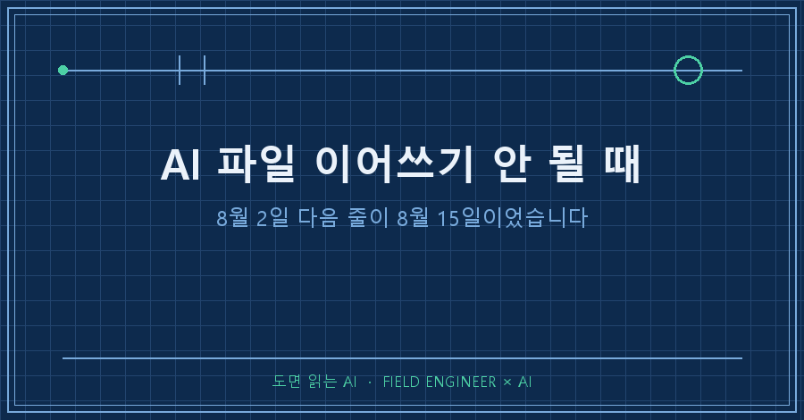
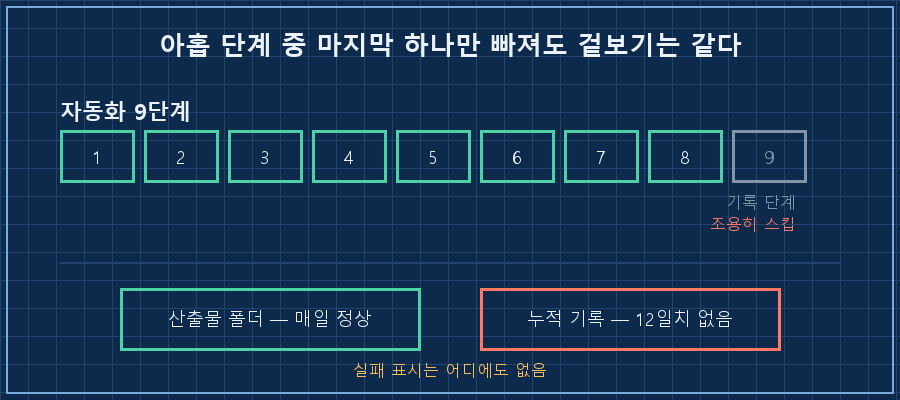
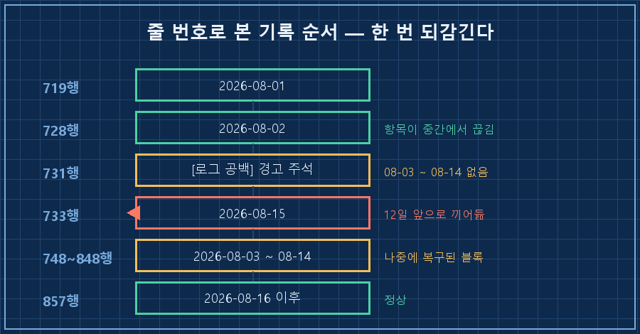
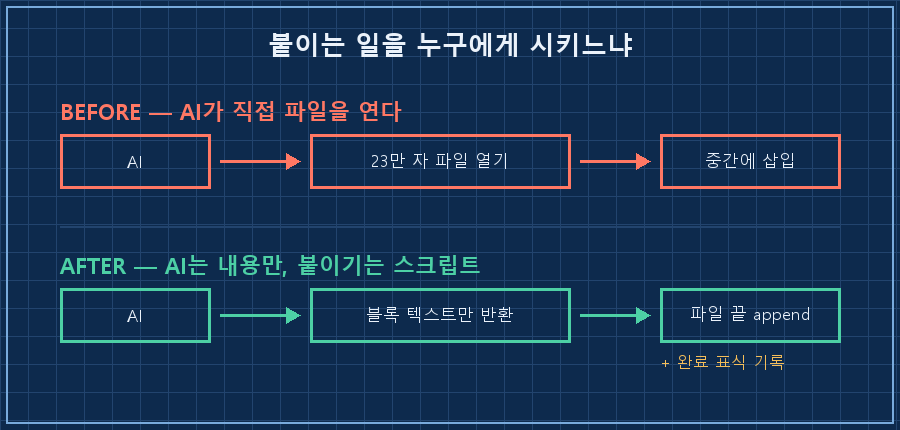

누적 기록 파일을 열었더니 8월 2일 항목 다음이 8월 15일이었어요. 사이 12일이 통째로 없었습니다.
그런데 그 12일 동안 만들어진 결과물은 폴더에 하루도 안 빠지고 들어 있었고요.
먼저 답부터 적을게요.
AI 파일 이어쓰기가 어긋나는 건 대개 지시문에 어디에가 빠져 있기 때문입니다. "이 파일에 추가하라"까지만 시키면, 긴 파일에서는 끝이 아니라 비슷하게 생긴 중간 자리에 붙습니다. 아예 안 붙는 날도 생기고요.
그래서 손댈 자리는 문장이 아니라 구조예요. 이어쓰기는 스크립트한테 넘기고, AI한테는 붙일 내용만 받으면 됩니다.
저는 제조 설비 쪽 엔지니어입니다. 십오 년 하면서 몸에 밴 게 하나 있는데, 작업 하나가 끝나면 그 자리에서 이력을 적는 거예요. 몰아서 적은 기록은 반드시 틀리거든요.
그 규칙을 제 PC의 자동화한테는 안 걸어놨더라고요..
2026년 8월, 윈도우에서 돌리는 개인 학습용 자동화 얘기입니다. 특정 AI 제품 문제가 아니라 파일을 직접 쓸 수 있는 AI면 전부 해당돼요.
1. 결과물은 매일 나왔는데 기록만 12일치가 없었어요
새벽에 혼자 도는 자동화가 하나 있습니다. 공부하려고 만든 거예요. 문서를 하나 만들고, 마지막에 그날 요약을 누적 파일에 한 항목 이어 쓰는 구조입니다.
산출물 폴더는 이랬어요.
08-01 04:08:28 47,352 bytes
08-03 04:07:28 45,994 bytes
...
08-14 04:09:14 46,369 bytes
08-16 04:07:14 44,835 bytes하루도 안 빠졌습니다. 그러니 저는 잘 돌고 있다고 믿었죠.
그런데 누적 파일의 항목 순서가 이렇게 생겼습니다. 줄 번호를 같이 적을게요.
719행 ### 2026-08-01
728행 ### 2026-08-02 ← 여기서 항목이 중간에 끊김
731행 ⚠️ [로그 공백] 08-03~08-14 항목이 이 파일에 없음
733행 ### 2026-08-1512일치가 비어 있어요. 이 자동화가 아홉 단계짜리인데, 마지막 아홉 번째가 바로 이 기록 단계입니다.
앞의 여덟 단계가 다 성공하고 마지막 하나만 조용히 빠져도, 겉으로는 아무 차이가 없습니다. 문서는 나왔으니까요.

발견도 제가 한 게 아니었어요. 8월 15일에 자동화가 스스로 이렇게 보고했습니다.
`…log.md`에 8/3~8/14 로그 공백을 발견했습니다
(문서 자체는 매일 정상 생성됐으나 기록 단계가 누락된 것으로 추정).
로그에 공백 경고 주석을 남겼고, 9단계 점검이 필요합니다.전에도 비슷한 일이 있었어요. AI가 남긴 보고를 제가 사흘 뒤에 읽은 적이 있는데, 이번엔 그보다 더 걸렸습니다.
2. 복구했더니 이번엔 순서가 뒤집혔어요
빠진 12일치는 각 날짜 문서가 남아 있어서 다시 채워 넣을 수 있었습니다. 문제는 그다음이에요.
다음 날 자동화가 또 보고를 남겼습니다.
8/15 항목이 파일 끝이 아닌 733행(8월 초 블록 사이)에 삽입돼 있는
순서 이상을 발견했는데, 구조 변경은 자의적으로 하지 않고 보고만 남겼습니다.줄 번호를 따라가 보면 이렇게 돼 있었어요.
| 줄 번호 | 들어 있는 항목 | 상태 |
|---|---|---|
| 728 | 08-02 | 정상 |
| 733 | 08-15 | 12일 앞으로 튀어 올라옴 |
| 748 ~ 848 | 08-03 ~ 08-14 | 나중에 복구된 블록 |
| 857 이후 | 08-16 ~ 08-20 | 정상 |
8월 15일 항목이 8월 3일보다 앞에 박혀 있는 겁니다.
공백 경고 주석 바로 아래에 자기 항목을 썼고, 복구분이 그 뒤에 붙으면서 순서가 통째로 어긋났어요.

이 파일은 891줄, 23만 자쯤 됩니다. 날짜 헤더 항목만 102개고요.
이 정도 크기가 되면 AI는 파일 전체를 훑고 나서 마지막 줄을 찾는 게 아니라, "이 근처가 그 자리 같다" 싶은 곳에 붙입니다. 사람이 두꺼운 서류철 중간에 종이를 꽂는 거랑 비슷해요.
3. 지시문에 위치가 안 적혀 있었습니다
원인을 찾으려고 제가 써둔 지시문을 열었어요. 이렇게 돼 있더군요.
### 9단계: 히스토리 기록
`…/learning_log.md`에 추가:
### {오늘 날짜}
- 항목1: {…}
- 항목2: {…}"추가" 한 단어가 전부입니다. 파일 끝이라는 말이 없어요.
붙일 내용의 형식은 일곱 줄이나 정해뒀는데, 정작 어디에 붙일지는 안 정해준 거예요.
빠진 게 하나 더 있습니다. 이 단계를 마쳤다는 표시를 남기라는 요구가 없었어요. 그러니 건너뛰어도 로그에 흔적이 안 남고, 저는 문서만 보고 넘어갔고요.
정리하면 사고 원인이 둘입니다. 위치를 안 정해줘서 끼워 넣기가 났고, 완료 표식이 없어서 12일을 몰랐어요..
4. 이어쓰기는 스크립트 몫으로 돌립니다
전제부터 적을게요. 윈도우 + 파이썬 3.12 기준이고, AI를 명령줄로 호출해 결과를 받아오는 구조면 그대로 적용됩니다 (2026년 8월 기준).
그리고 하나 밝혀둘 게 있어요. 이 아래는 이번 주말 작업 목록입니다. 원인까지만 잡아둔 상태고 코드는 아직 안 고쳤어요.
바꿀 건 역할 분담이에요. AI한테는 붙일 블록만 만들게 하고, 파일에 붙이는 건 파이썬이 맡습니다.
# AI 출력에서 블록만 뽑는다 (파일은 건드리지 못하게)
m = re.search(r"<LOG_BLOCK>(.*?)</LOG_BLOCK>", ai_output, re.S)
block = m.group(1).strip() if m else None
if block:
with open(LOG, "a", encoding="utf-8") as f: # a = 무조건 파일 끝
f.write("\n" + block + "\n")
log("9단계 기록 완료") # 완료 표식을 남긴다
else:
log("9단계 기록 실패 — 블록 없음") # 실패도 남긴다"a" 모드는 커서를 항상 파일 끝에 둡니다. 위치를 말로 설명할 일이 없어져요.
지시문에서는 파일 경로를 아예 뺄 생각이에요. 이렇게만 시키면 됩니다.
기록 블록을 <LOG_BLOCK> </LOG_BLOCK> 사이에 출력하라.
파일에는 직접 쓰지 마라.
제대로 됐는지는 이 검사기로 확인합니다
고쳤다는 판정은 눈으로 하지 않으려고요. 날짜 헤더만 뽑아서 순서와 결번을 세는 코드를 하나 만들어 돌려봤습니다.
import re, datetime
seen = []
for i, line in enumerate(open(LOG, encoding="utf-8"), 1):
m = re.match(r"^###\s+(\d{4}-\d{2}-\d{2})", line)
if m:
seen.append((i, m.group(1)))
for (ln, d), (_, prev) in zip(seen[1:], seen[:-1]):
if d < prev:
print(f" 줄 {ln}: {d} 가 {prev} 뒤에 있음 (역순)")
print("항목 수:", len(seen))실제로 돌린 결과가 이겁니다.
항목 수: 102
줄 748: 2026-08-03 가 2026-08-15 뒤에 있음 (역순)
역순 건수: 1
8월 결번: ['2026-08-17']역순 1건은 위에서 본 그 자리예요. 결번으로 잡힌 하루는 자동화가 실제로 안 돈 날이라 정상이고요.
판정 기준은 세 줄로 정했습니다.
- 역순 건수가 0이면 위치는 통과
- 결번이 실행 안 한 날짜와 정확히 일치하면 누락은 통과
- 로그에 "9단계 기록 완료"가 그날 날짜로 찍혀 있으면 최종 통과
세 번째가 핵심이에요. 앞의 두 개는 이미 벌어진 일을 세는 거고, 세 번째만이 오늘을 말해줍니다.
이런 게 궁금하실 것 같아서
Q. 지시문에 "파일 맨 끝에 추가하라"라고 쓰면 안 되나요?
도움은 됩니다. 다만 보장은 아니에요. 파일이 커질수록 "끝"을 찾는 정확도가 떨어지고, 그게 어긋나도 결과물은 멀쩡해 보입니다. 위치는 문장으로 부탁할 게 아니라 코드로 못 박는 쪽이 확실하더라고요.
Q. 12일이나 어떻게 모를 수가 있나요?
저도 이게 제일 아팠는데, 산출물이 매일 나왔기 때문입니다. 단계별 완료 표식이 없으면 마지막 단계 하나가 빠진 날과 다 성공한 날이 겉으로 똑같아요. 결과물 파일만 보고 있으면 절대 안 보입니다.
Q. 이미 뒤엉킨 파일은 날짜순으로 자동 정렬하면 되지 않나요?
저도 그 생각을 했는데 안 했습니다. 항목마다 아래에 딸린 줄이 여러 개라, 헤더 기준으로 정렬하면 본문이 엉뚱한 날짜에 붙을 위험이 있어요. 그래서 과거분은 경고 주석만 남기고 그대로 뒀습니다. 지나간 기록을 예쁘게 만드는 것보다, 오늘부터 어긋나지 않는 게 급했고요.
정리하면 이렇습니다. AI 파일 이어쓰기는 "무엇을 쓰느냐"보다 "어디에 어떻게 붙느냐"에서 깨져요. 붙이는 일은 스크립트한테 주고, AI한테는 내용만 받으세요. 그리고 붙였다는 표식을 꼭 남기시고요.
혹시 AI한테 기록 파일을 맡겨두셨다면, 오늘 그 파일 마지막 줄의 날짜부터 한번 보세요. 저는 그게 12일 전이었습니다.
비슷한 걸 이미 고쳐보셨다면 makefield.ai로 알려주세요. 저도 배우고 싶어요.
태그: #AI파일이어쓰기 #AI기록누락 #AI파일수정오류 #AI가파일끝에추가 #긴파일AI수정 #AI에게일시키기 #AI결과물검수 #자동화로그확인 #무인자동화 #파이썬자동화 #AI에이전트 #개인AI에이전트 #AI프롬프트작성법 #현장엔지니어 #도면읽는AI